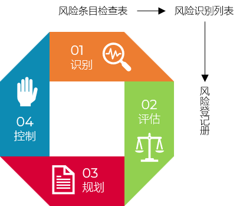
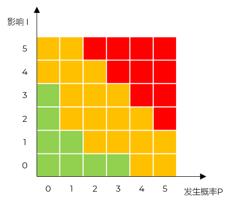
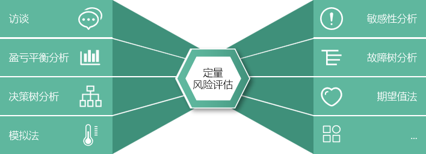

软件项目风险计划
Risk- 风险涵义 Definition
- 风险是一种概率事件
- 风险：对潜在的、未来可能发生损害的一种度量
- 软件风险：对软件开发过程及软件产品本身可能造成的伤害或损失
- 特征 Feature
- 不确定性
- 损失
- 风险3要素 Component
- 风险事件 Events
- 风险事件发生的概率 Probabilities
- 影响 Impacts
- 风险类型 Category
- 作业
- 上课
- 劳务合同
- 人员离职
- 数据库租赁
- 会员服务
- API
- 节假日
- 法律法规
- 天灾人祸
- 商业风险：产品脱离市场预期
- 管理风险：项目管理的方方面面
- 人员风险：技术栈
- 技术风险：产品新框架
- 开发环境风险：IDE、SAAS、PAAS
- 客户风险：不接受、不确认
- 过程风险：版本控制
- 产品规模风险：并发
- ...
- 风险管理4过程 Process
- 分析3个要素的过程
- 旨在识别出风险，然后采取措施使它们对项目的影响最小化
- 风险识别
- 风险评估
- 风险规划
- 风险控制
部分案例可能引入不适
如果你不主动攻击风险，风险就会主动攻击你
-Tom Gilb
在17世纪之前的欧洲，人们见过的所有天鹅都是白色的，因此“天鹅都是白色的”成了当时欧洲人深信不疑的真理。直到后来探险家在澳大利亚发现了第一只黑天鹅，这个延续了数千年的认知瞬间被彻底推翻。
泰坦尼克号沉没： 这艘被誉为“永不沉没”的豪华巨轮，在处女航中就因撞上冰山而沉没，造成了震惊世界的惨痛海难
9·11 恐怖袭击事件： 在发生之前，几乎没有人能想象民航客机会被劫持去撞击摩天大楼，这一事件彻底改变了全球的政治和安全格局
2008年全球金融危机： 在危机爆发前，绝大多数金融专家和机构都认为美国房地产市场坚不可摧，但次贷危机的突然爆发导致了全球金融体系的剧烈动荡
2020年新冠疫情： 这场突如其来的全球性公共卫生事件，让全球经济社会一度陷入停摆，对全人类的生活方式产生了深远影响

风险识别 Identification
- 风险管理第一步
- 只有识别出风险，才有可能避免这些风险
- 目标：尽可能全面地找出项目中所有潜在的风险点 - 风险事件 Events
- 特点：贯穿项目始终，而非一次性活动
- 方法 Approach
- 德尔菲方法
也称专家调查法
主观的、定性的方法
匿名或公开
各大咨询巨头
- 头脑风暴法
组织项目团队成员、领域专家共同讨论，集思广益
使用创造性思维获取未来信息
禁止批评，追求数量
急需、本能
- 情景分析法 Scenario Analysis
也称场景建模 Scenario Modeling
通过构建未来可能发生的各种具体“情景”或“故事线”，来分析在不同情况下可能面临的风险
推演未来：它不是预测单一的未来，而是设想多种可能性（如“最好的情况”、“最坏的情况”、“最可能的情况”）
系统性：考虑各种因素（政治、经济、社会、技术等）如何相互作用导致某种结果。
工具：用例图、活动图/时序图、看板
- 利用风险条目检查表
基于历史数据和经验，列出一份常见的风险清单，逐项核对
基于历史：这是最“接地气”的方法，利用过去项目中遇到的问题来检查当前项目
结构化/快速：就像超市购物清单一样，简单直接，不易遗漏常见的低级错误
局限性：只能识别已知的、过去的风险，很难发现全新的、独特的风险（即“未知的未知”）
- 输入 Input
- 项目相关资料，如：项目工作分解 WBS、工作陈述 SOW
- 输出 Output
- 风险识别列表 Risk Identification List
- 也称风险清单(初级版)
- 核心要素
唯一编号：给每个风险一个专属ID（如 RISK-001），方便后续追踪和沟通
风险类别：给风险打上标签，比如是技术风险、需求风险、财务风险还是外部合规风险等
风险描述：清晰、详尽地说明这个风险是什么。通常包括风险的性质、诱因以及如果发生会带来什么后果
潜在应对措施：针对这个风险，目前能想到的初步解决办法或缓解策略
根本原因：导致这个风险发生的深层次原因

| 序号 | 风险类别 | 检查条目（问题） | 检查结果 | 风险等级 | 潜在措施/备注 |
|---|---|---|---|---|---|
| 1 | 需求风险 | 核心需求是否已获客户签字确认？ | 否 | 高 | 需在本周五前安排签字会议，否则暂停开发 |
| 2 | 技术风险 | 团队是否掌握项目所需的关键技术？ | 部分 | 中 | 2名核心成员不熟悉新框架，需安排3天培训 |
| 3 | 外部依赖 | 第三方API接口文档是否已就绪？ | 是 | 无 | 无需额外操作 |
| 4 | 资源风险 | 关键人员（如架构师）近期是否有休假计划？ | 是 | 低 | 已确认休假时间，已安排备份人员 |
| 风险编号 | 风险类别 | 风险描述 | 根本原因 | 潜在应对措施 |
|---|---|---|---|---|
| RISK-001 | 需求风险 | 核心需求尚未获得客户签字确认。若后续需求发生重大变更，可能导致开发返工或进度延误。 | 客户内部决策流程繁琐，且对接人权限不足，导致确认滞后。 | 需在本周五前安排签字会议，否则暂停开发。 |
| RISK-002 | 技术风险 | 团队对关键技术掌握不足。部分核心成员不熟悉新框架，可能导致开发效率低下或代码质量不达标。 | 项目采用了未经过充分验证的新技术栈，且团队缺乏相关培训预算或时间。 | 安排2名核心成员进行为期3天的专项技术培训。 |
| RISK-003 | 资源风险 | 关键人员（架构师）近期有休假计划。项目关键路径期间，核心架构师将休假，可能导致技术决策滞后。 | 项目排期与人员年假计划未对齐，且缺乏人才梯队建设（备份不足）。 | 已确认休假时间，并已安排备份人员（接班人）在此期间待命。 |
风险评估 Evaluation
- 风险识别：发现问题
- 风险评估：分析问题
对风险影响力进行衡量的活动
对识别出来的风险事件进一步分析；对风险发生的概率进行估计和评价；对风险后果的严重性进行估计和评价
- 输出 Output
- 风险登记册（包含风险评估数据的完整版）
- 动态文档，它是随着项目进展不断完善的
- 表示 Presentation
- 风险发生的概率 P
- 风险对项目的影响程度 I
- 方法 Approach
- 目的：界定风险源
- 基于定性风险评估的基础，通过一定的方法合成，得到系统风险的量化值
- 目的：量化分析每一个风险的概率及可能造成的影响
- 通过研究产量（销量）、成本和利润三者之间关系，来评估企业经营状况和风险的工具
- 核心目的就是算出那个“不赚也不赔”的临界点——即盈亏平衡点（BEP - Break Even Point）；也称零利润点、保本点、盈亏临界点、损益分歧点、收益转折点
- 盈亏平衡分析基于一个基本的利润公式：
- 当利润为 0 时，我们就达到了盈亏平衡点
- 当销售收入高于盈亏平衡点时，盈利；反之则亏损
- 盈亏平衡点越低，项目盈利的机会就越大
- 计划实施后，EMV=6500；应该实施计划
| 风险编号 | 风险描述 | 概率 (P) | 影响 (I) | 风险值 (R) | 风险等级 | 应对策略 | 责任人 | 状态 |
|---|---|---|---|---|---|---|---|---|
| RISK-001 | 核心需求尚未获得客户签字确认，存在返工风险。 | 高 (80%) | 极高 (严重影响进度) | 极高 | 高 | 规避/减轻：本周五前安排高层签字会议，否则暂停开发。 | 项目经理 | 监控中 |
| RISK-002 | 团队对关键技术（新框架）掌握不足，效率可能低下。 | 中 (50%) | 中 (影响代码质量) | 中等 | 中 | 减轻：安排2名核心成员进行为期3天的专项技术培训。 | 技术负责人 | 处理中 |
| RISK-003 | 关键人员（架构师）近期有休假计划，可能导致决策滞后。 | 高 (100%确定发生) | 低 (已有备份) | 低 | 低 | 接受/减轻：已确认休假时间，并安排备份人员待命。 | 资源经理 | 已规划 |


决策树分析是一种图表分析方法
提供项目所有可供选择的行动方案，行动方案之间的关系，行动方案的后果以及发生的概率
采用损益期望值 EMV - Expected Monetary Value 作为决策的一种计算值
根据预期结果价值、发生的概率计算出一种期望的损益
风险应对策略 Strategies
- 回避风险 Risk Avoidance
- 及时改变计划来避免或制止风险
- 回避风险是对可能发生的风险尽可能的规避，采取主动放弃或者拒绝使用导致风险的方案
放弃采用新技术；但可能导致产品存在技术落后的风险
砍掉高风险需求
拒绝参与
旅游风险预警
- 转移风险 Risk Transfer
- 转移风险是为了避免承担风险损失，有意识将损失或与损失有关的财务后果转嫁出去的方法。
分包
采购产品或服务：云服务
签订合同：使用固定价格合同；开脱责任合同
购买保险
其它约定
- 损失控制 Risk Control
- 风险发生前消除风险可能发生的根源，并减少风险事件发生的概率
- 损失预防：为了消除或减少可能引起风险的各种因素而采取的措施
项目技术培训，预防技术失败
重要阶段让干系人参与
变更控制
- 损失抑制：风险发生时或风险发生后，为了缩小损失而采用的措施
项目人员储备，抑制人员流失的损失
系统异地备份
- 自留风险 Risk Retention
- 由项目组织自己承担风险事故所致损失的措施
器材、设备损耗
超市的商品损耗与偷窃
快递公司的包裹轻微破损
练习 Drill
- 方案甲 EMV=0.2×20+0.3×70+0.5×100=4+21+50=75
- 方案乙 EMV=0.3×10+0.2×50+0.5×160=3+10+80=93
- 应该选择方案乙
- 风险识别
- 风险评估
- 风险规划
规避：提前制定复习计划，确保充足复习时间；选择难度适中的选修课
转移：组建学习小组，互相监督和帮助；向老师或学长请教难点
减轻：进行模拟考试，熟悉题型和考试节奏；通过运动和冥想缓解考场紧张；保持健康作息，预防疾病
接受：若因不可抗力（如突发疾病）导致挂科，接受结果并准备补考
- 风险控制
监测：每日打卡、每周自测；及时发现进度偏差
纠偏：调整复习重点、寻求帮助；解决“学不会”或“来不及”的问题
激励/惩罚：完成奖励游戏时间、未完成罚款；维持长期的复习动力
应急：考前生病/失眠应对方案；确保在极端情况下损失最小化
| 方案甲 | 方案乙 | |||||
|---|---|---|---|---|---|---|
| 滞销 | 一般 | 畅销 | 滞销 | 一般 | 畅销 | |
| 概率P | 0.2 | 0.3 | 0.5 | 0.3 | 0.2 | 0.5 |
| 收益V | 20 | 70 | 100 | 10 | 50 | 160 |
| sn | item |
|---|---|
| 1 | 复习时间不足 |
| 2 | 知识点掌握不牢固 |
| 3 | 考试题型不熟悉 |
| 4 | 考场紧张导致发挥失常 |
| 5 | 突发疾病或意外事件影响考试 |
| 6 | 课程难度超出预期 |
| 7 | 缺乏有效的复习方法 |
| 8 | 学习动力不足，拖延严重 |
| SN | Item | Probability |
|---|---|---|
| 1 | 复习时间不足 | 中 |
| 2 | 知识点掌握不牢固 | 高 |
| 3 | 考试题型不熟悉 | 低 |
| 4 | 考场紧张导致发挥失常 | 低 |
| 5 | 突发疾病或意外事件影响考试 | 低 |
| 6 | 课程难度超出预期 | 中 |
| 7 | 缺乏有效的复习方法 | 中 |
| 8 | 学习动力不足，拖延严重 | 高 |